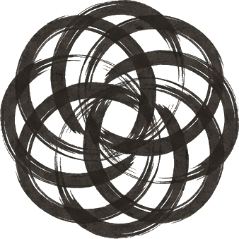

문제를 정의하는 방법을 연구합니다.
교육 · 연구 · 훈련
해결 방법론은 수백 가지입니다. 디자인씽킹, 린, 애자일, 시스템 사고. 그런데 그 모든 방법론이 공통으로 전제하는 단계가 있습니다.
문제정의입니다.
문제정의연구소는 이 단계를 독립적인 방법론으로 다룹니다. 문제를 어떻게 정의하느냐에 따라 해결의 방향이 달라지고, 동원할 수 있는 자원이 달라지고, 도달할 수 있는 결과가 달라집니다.
문제지능(Problem Intelligence)을 훈련하는 워크숍과 강의를 운영합니다. 문제를 보는 눈, 구분하는 언어, 구조를 밝히는 기술, 정의를 작동시키는 역량을 다룹니다.
문제정의 실패의 유형과 구조를 연구합니다. 의사결정자의 절반이 잘못된 문제를 풀고 있다는 사실은 알려져 있지만, 왜 그런지를 체계적으로 다루는 곳은 많지 않습니다.
개인과 조직이 문제정의를 반복 가능한 역량으로 갖추도록 돕습니다. 문제지능은 타고나는 것이 아니라 훈련 가능합니다.
문제정의연구소는 네 단계의 프레임워크로 문제정의를 다룹니다.
나는 뭘 못 보고 있는가
문제를 어떻게 구분하는가
이 문제의 구조는 무엇인가
이 정의를 어떻게 작동시키는가